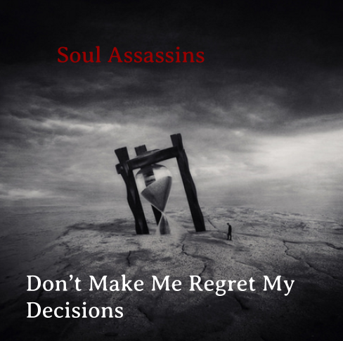

Soul Assassins
Challenge information
Design thinking is the ability or method to think of a solution to a problem or to simply design a way that can help someone in a certain way. Even if it’s to design good looking clothing, a great band name, or a schedule to a school day. Design thinking is just a creative process to think. We are learning this because it can help us create something for other people or create a solution that can help us with a certain problem.
In this challenge, we used the DEEP design process to design a band. The first step of the DEEP process is discover. In the discover step we had to bring together all the”creative” band names we knew with our class and see what they all had in common. After that, seeing all the names and what they had in common we used the Empathy step.
Empathy means to use your ability to tell what people are thinking depending on certain stuff. For example with all the names that people suggested as creative band names we can see that there was a lot of Post-hadcore listeners in the class. Therefore if you made a band that was post-hardore than there could be people in this class listening to it.
Band Biography
Nydia was a young girl from Italy. Lonely and shy, an outcast if you'd like to call her that. The only people she liked to hang around with were the kids that drew a lot of anime stuff in her college because they drew what she wanted. One day she was feeling disappointed and sad and one of the anime geeks drew her the picture above stating that “Time is the worst killer” Being relatively emo most of her life, she took a liking into this picture. If there was one thing Nydia was known for, was she can sing, and really good. She started to look at this photo and thought of Assassins and the game Assassin’s creed. How all the players have a soul purpose on why they kill, that makes their killing a little less evil with a purpose. A Soul Assassin. But instead of killing, her soul purpose was to make music. She ranted on about this idea with her best friend Ruby-Kens. Ruby as into the idea but in one condition, as long she can go all Twenty One pilots with it and be the drummer. So they agreed and with their main post hardcore music taking air, there is only one thing they want to make sure, that they won’t later regret their decisions.